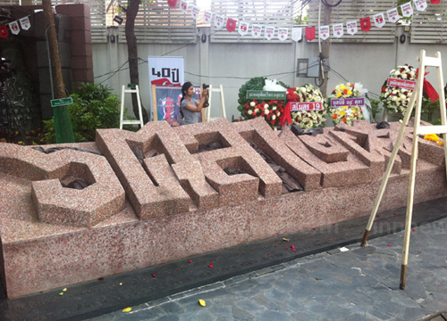

เหยื่อความรุนแรง
“เหยื่อความรุนแรง” เป็นพื้นที่สำหรับรวบรวมประวัติของนักศึกษาและประชาชนจำนวน 40 รายที่เสียชีวิตจากการฆาตกรรมหมู่เมื่อวันที่ 6 ตุลา ด้วยความตระหนักว่าตลอดเวลากว่า 40 ปีที่มีการจัดงานรำลึก 6 ตุลา เรารู้จักเกี่ยวกับเหยื่อน้อยมาก พวกเขามักถูกจดจำในฐานะตัวเลขความตายเท่านั้น ขณะที่เรื่องราวและอุดมการณ์ของพวกเขา ตลอดจนผลกระทบต่อครอบครัวกลับถูกละเลย หรือมักถูกมองว่าเป็นเรื่องส่วนตัว ไม่ใช่ความสูญเสียของสังคม วิธีการสังหารที่โหดเหี้ยมผิดมนุษย์ในเช้าวันที่ 6 ตุลาคือการแสดงการเหยียบย่ำศักดิ์ศรีความเป็นมนุษย์ของพวกเขา การทำความรู้จักตัวตนของเหยื่อก็คือการแสดงความเคารพต่อความเป็นมนุษย์ของพวกเขา ทั้งนี้ ตั้งแต่เดือนมิถุนายน 2559 จนถึงมีนาคม 2561

รายชื่อเหยื่อความรุนแรง
วิชิตชัย อมรกุล
อรุณี ขำบุญเกิด
ปรีชา แซ่เฮีย (หรือแซ่เอีย)
วิมลวรรณ รุ่งทองใบสุรีย์
เนาวรัตน์ ศิริรังษี
ภูมิศักดิ์ ศิระศุภฤกษ์ชัย
จารุพงษ์ ทองสินธุ์
มนัส เศียรสิงห์
สุพล พาน
ดนัยศักดิ์ เอี่ยมคง
อภิสิทธิ์ ไทยนิยม
พงพันธ์ เพรามธุรส
อับดุลรอเฮง สาตา
ไพบูลย์ เลาหจิรพันธ์
อนุวัตร อ่างแก้ว
บุนนาค สมัครสมาน
อัจฉริยะ ศรีสวาท
สุรสิทธิ์ สุภาภา
กมล แก้วไกรไทย
มนู วิทยาภรณ์
สัมพันธ์ เจริญสุข
สุวิทย์ ทองประหลาด
วีระพล โอภาสวิไล
สุพจน์ พันธุ์กาฬสินธุ์
ภรณี จุลละครินทร์
ยุทธนา บูรศิริรักษ์
วัชรี เพชรสุ่น
ชัยพร อมรโรจนาวงศ์
สงวนพันธุ์ ซุ่นเซ้ง
สมชาย ปิยะสกุลศักดิ์
วิสุทธิ์ พงษ์พานิช
ศิริพงษ์ มัณตะเสถียร
วสันต์ บุญรักษ์
ชายไทยไม่ทราบชื่อ ถูกสะเก็ดระเบิดที่ศรีษะ
ชายไทยไม่ทราบชื่อ ถูกกระสุนปืนเข้าช่องปอด
ชายไทยไม่ทราบชื่อ ถูกกระสุนปืน